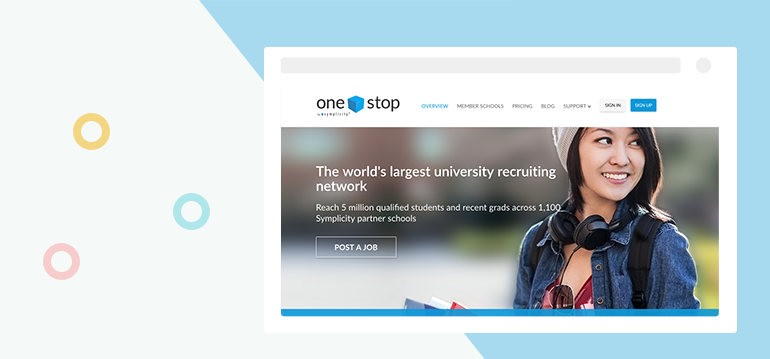
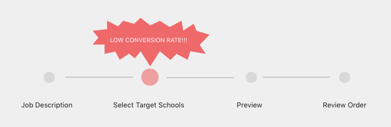
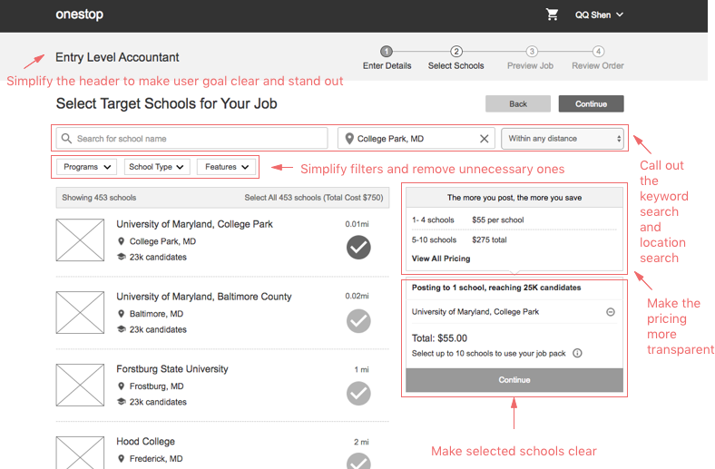
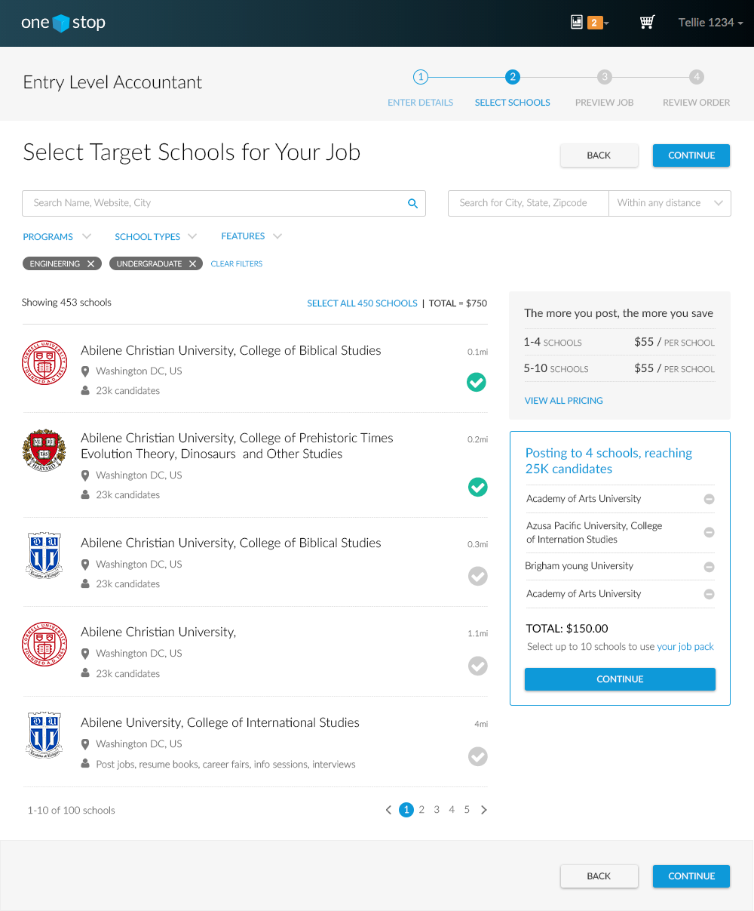
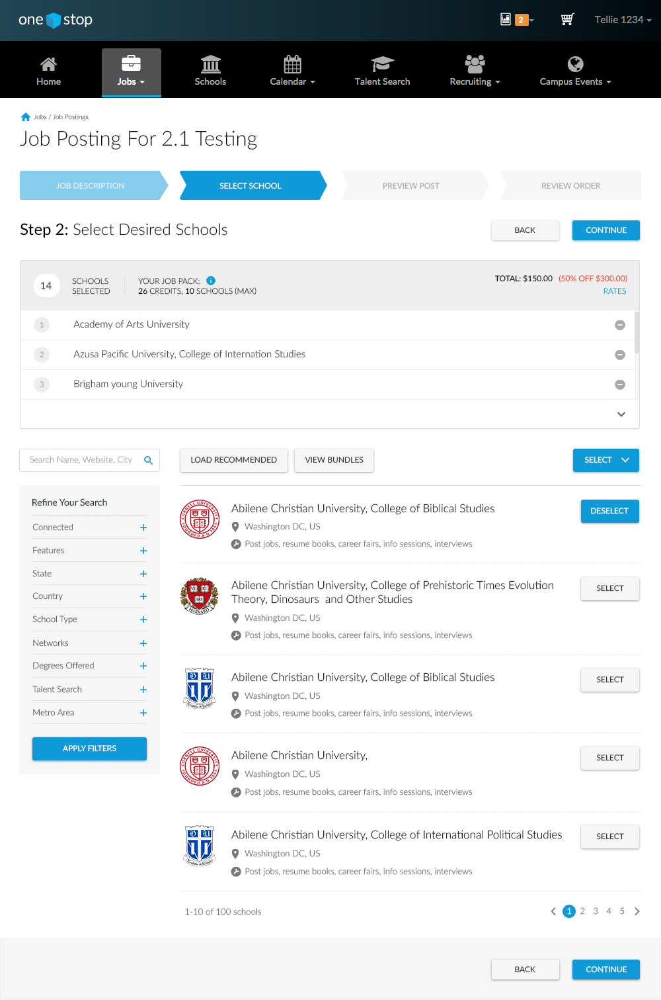

-
One Stop
2016. Website. Research. Prototyping
OneStop is a recruiting site for employers to hire candidates through job posting, on campus events and manage relationships with schools. I’ve been the UX designer for it since 2013.
As UX designer in the agile team, I am now responsible for defining every sprint scope, writing user stories, conducting user researches and creating prototypes to communicate among team members.
The project is big as a whole, thus here I will just pick one recent release to demonstrate.
Overview
The main function in OneStop is allowing recruiters to post their job to multiple OneStop network schools and manage applicants in one place. The job posting flow has several steps: and now the step 2 to select target schools has the lowest conversion rate, and our goal of this sprint is to higher the conversion rate.
Identify Problems
To identify why the conversion rate is so low, I used several methods: 1. Set up an in page survey question which pop-outs when user quit this page; 2. Run another survey to send out to all current users about how they select schools; 3. Scheduled 6 interviews to observe how people actually use the current system.
Here’re main problems I found:
1. Users search schools they aready knew about;
2. Users want to see top schools with relevant majors around job location;
3. Users don’t need our recommendations cause they don't research schools here;
4. Users are confused by the pricing because it is complex and hidden at the corner.
Redesign
With the problems found, I started to redesign this page. Here are steps I took:
1. Create initial wireframes and present to teams to iterate;
2. Finalize several versions and test with users to settle down with 1 version;
3. Create Google analytics goals for the new design;
4. Present to the team of the final decision and implementation.
Here’s the final wireframe.

Here’s the final wireframe with rationales behind it.
Here are the final mockups comparisons
